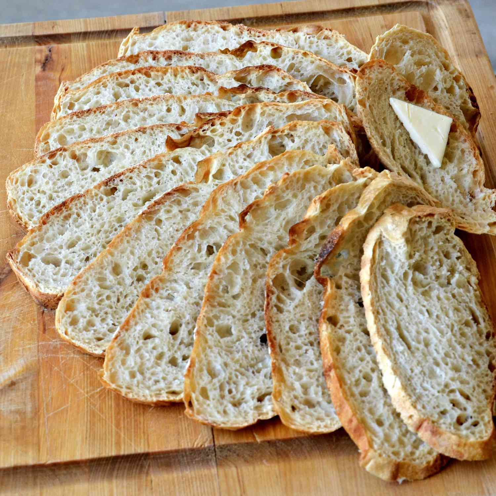
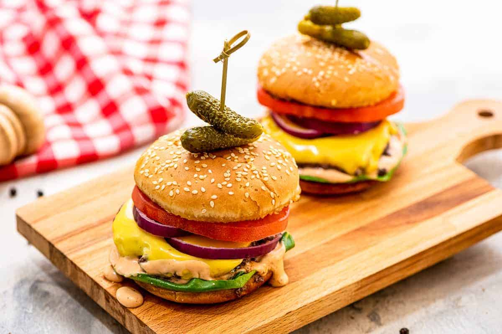

Our chef works with local fisherman to pick the freshest the sea has to offer for our daily seafood special. Our Roast Cod Caponata with Roasted potatoes is an old family recipe passed down for many generations
Not only is our food good, its also good-looking! Our patrons stop to admire our fare with a quick Instagram before digging in. We've collected a few of our favorite foods to dsiplay

we start out the day at the crack of dawn to bake our own muffins, bread, and dinner rolls. loaves not used that day are donated to the local food shelter.

People come from all over to enjoy our lovingly made burgers. We grind our own lockally-sourced organic beef and turkey so you know it fresh and free from fillers!
Our chef works with local fisherman to pick the freshest the sea has to offer for our daily seafood special. Our Roast Cod Caponata with Roasted potatoes is an old family recipe passed down for many generations